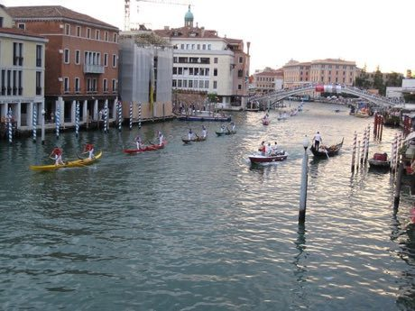

Home / Age of Contact and Craft / Mediterranean
Encyclopedia ID 486
Venetian lagoon regatta
Regata · gondolino


Pairs of rowers in narrow lagoon craft race a canal course.
Heritage note
Part of the living heritage of Italy. Some forms of this practice carry deep meaning for the communities who keep it; here we describe the play and the craft only, with respect for its roots.
Origins
Usually placed in the era of Age of Contact and Craft (about 1500 to 1800), although its exact origins are uncertain, within the cultural world of Mediterranean.
Sources
Related entries

Nouka Baich
Bangladesh +1 · Racing
Pirogue coastal canoe race
Worldwide · Racing
Nile Felucca Sailing
Egypt · Racing
Shikara paddle race
India · Racing
Hanetsuki
Japan · Racing
Ngalawa outrigger sailing
Comoros · Racing